第1回 多変量解析とは
分析の目的から手法を選ぶ
場面：「この家、いくら？」
不動産の査定を任されたとしましょう。まず収入の高い地区ほど高い、と考えます。
収入はほぼ同じなのに価格が大きく違う。 収入だけでは決まらないのです。
今回の問い
住宅価格を予測したい。手元にあるのは：
- 地区の平均収入、築年数、部屋数、人口密度、海までの距離…
- 変数が8つある。これらをどう使えばいいのか？
1変数ずつ眺めるだけで十分なのか、それとも全部を同時に使うべきなのか。 この問いから多変量解析の世界に入っていく。
データ：カリフォルニア住宅価格
| 変数 | 意味 | |
|---|---|---|
| 0 | MedInc | 地区の世帯収入の中央値 |
| 1 | HouseAge | 住宅の築年数の中央値 |
| 2 | AveRooms | 世帯あたり平均部屋数 |
| 3 | AveBedrms | 世帯あたり平均寝室数 |
| 4 | Population | 地区の人口 |
| 5 | AveOccup | 世帯あたり平均居住人数 |
| 6 | Latitude | 緯度 |
| 7 | Longitude | 経度 |
8つの特徴から価格を当てたい。
データの四角形：講義の主役
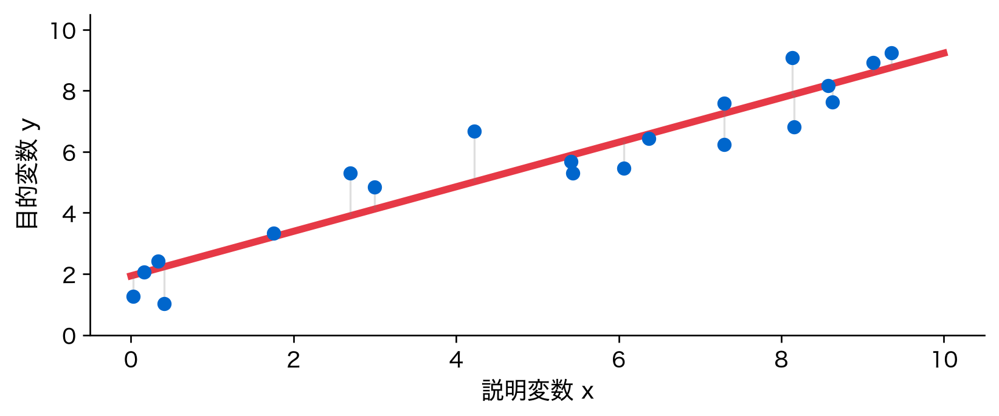
- 行＝1標本（地区）、列＝1変数
- 以後15回、すべての手法がこの四角形への操作になる
目的変数の分布を見る
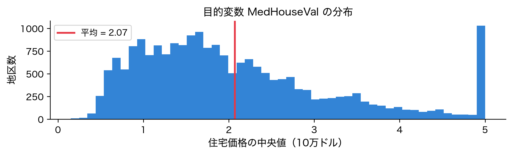
右に裾を引いた分布で、5（=50万ドル）に頭打ちの山がある。予測対象の素性を最初に知るのが鉄則。
変数どうしの関係：ペアプロット
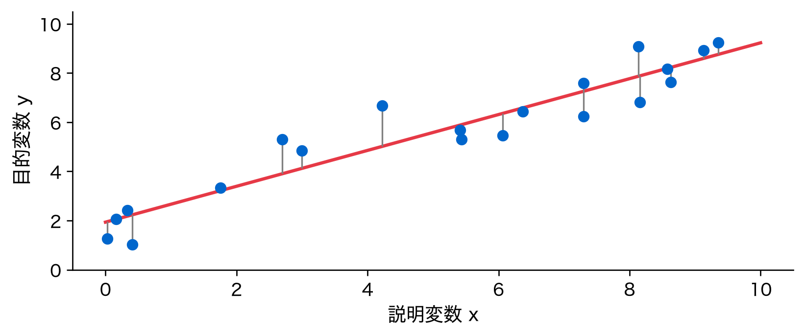
収入と価格が右上がりに見える。
なぜ難しいか：1変数ずつ見た図
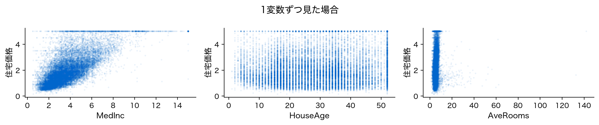
収入はそれなりに効きそう。だが築年数・部屋数は雲のように散らばり、単独では価格を語れない。
素朴な方法：単回帰を1変数ずつ

いちばん効く変数でも半分も説明できない。
単回帰の限界：R² を並べて比較
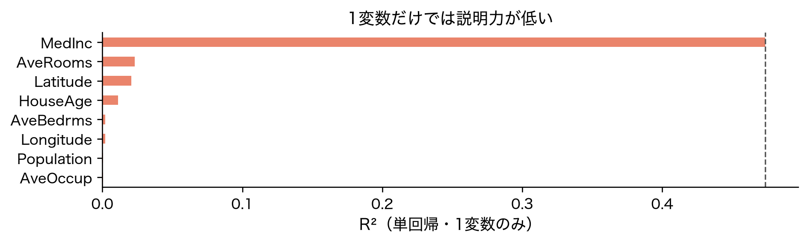
最良の収入ですら R^2 \approx 0.47。残りは0付近。どれか1つでは足りないことが数字で分かる。
位置づけ：多変量解析の地図
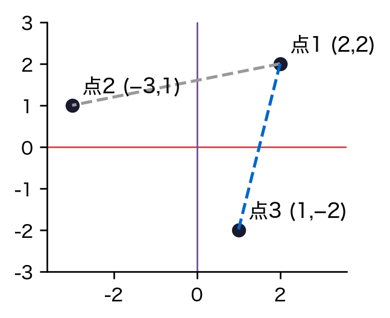
左は正解（目的変数）あり、右はなし。今回の住宅価格予測は左上の「回帰」。
全15回はこの地図のどこを通るか
| ブロック | 回 | 4象限での位置 |
|---|---|---|
| 回帰 | 1〜6回 | 教師あり・数値予測 |
| 分類 | 7〜8回 | 教師あり・カテゴリ予測 |
| 次元縮小 | 10〜11回 | 教師なし・変数圧縮 |
| クラスタリング | 12〜13回 | 教師なし・グループ発見 |
| 分割表 | 14〜15回 | カテゴリ変数の関係 |
直感：複数の変数を「同時に」使う
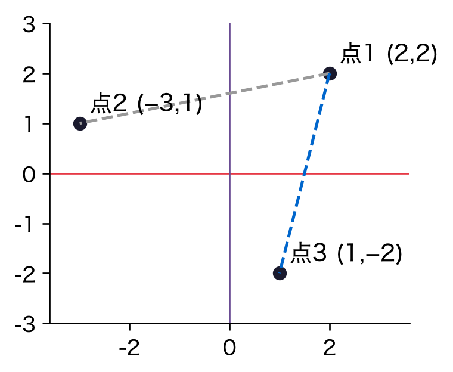
価格との相関が最大なのは収入（0.69）。他の変数も0でない情報を持つので同時に使いたい。
行列で見る：重回帰は四角形×細長い箱
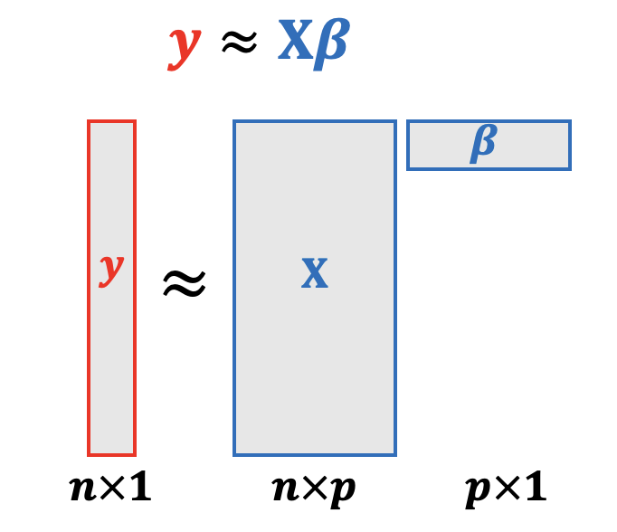
\mathbf{y} \approx \mathbf{X}\boldsymbol{\beta}
箱の中身が今回の主題。
定義①：線形回帰モデルの式
複数の説明変数 x_1, x_2, \ldots, x_p から目的変数 y を予測する：
\hat{y} = \beta_0 + \beta_1 x_1 + \beta_2 x_2 + \cdots + \beta_p x_p
- \hat{y}：モデルが出す予測値
- p：説明変数の数（今回は8）
- 各変数に重み \beta_j を掛けて足し合わせる 「重み付き和」
定義②：係数 β の意味
\hat{y} = \beta_0 + \beta_1 x_1 + \cdots + \beta_p x_p
読み方：ベータ・ジェイは、他を止めたまま変数ジェイを1増やしたときの予測値の変化量。
- \beta_0：切片。すべての x_j が0のときの予測値
- \beta_j：x_j の回帰係数。正なら押し上げ、負なら押し下げ
定義③：最小二乗法の目的関数
残差の二乗和を最小にする \beta を選ぶ。
\mathrm{RSS}(\beta) = \sum_{i=1}^{n} \bigl(y_i - \beta_0 - \textstyle\sum_{j=1}^{p}\beta_j x_{ij}\bigr)^2
読み方：各データについて実測から予測を引き、それを二乗して全データぶん足す。
正負が打ち消さないよう二乗する。微分できるので解析解が出る。 これが最小二乗法。
導出①：1変数での最小二乗
変数1つで考え、\mathrm{RSS} を偏微分して0と置く。整理すると：
\hat{\beta}_1 = \frac{\sum_i (x_i-\bar{x})(y_i-\bar{y})}{\sum_i (x_i-\bar{x})^2}
読み方：傾きは、エックスとワイの共分散をエックスの分散で割ったもの。
回帰直線は必ず平均点を通る。
導出②：行列で多変数へまとめる
n 個の式をまとめて、行列・ベクトルで書く：
\mathbf{y} = \mathbf{X}\boldsymbol{\beta} + \boldsymbol{\varepsilon}
- \mathbf{y}：観測値ベクトル（長さ n）
- \mathbf{X}：データの四角形に 1 の列を加えた行列（n \times (p{+}1)。切片を吸収。以後この約束で \mathbf{X} と書く）
- \boldsymbol{\beta}：係数ベクトル、\boldsymbol{\varepsilon}：残差
導出③：正規方程式
RSS を \boldsymbol{\beta} で微分して0と置くと正規方程式が出る：
(\mathbf{X}^\top \mathbf{X})\,\boldsymbol{\beta} = \mathbf{X}^\top \mathbf{y}
\mathbf{X}^\top\mathbf{X} が正則なら、両辺に逆行列を掛けて：
\hat{\boldsymbol{\beta}} = (\mathbf{X}^\top \mathbf{X})^{-1} \mathbf{X}^\top \mathbf{y}
深掘り：微分の中身
\nabla_\beta \|\mathbf{y}-\mathbf{X}\beta\|^2 = -2\mathbf{X}^\top(\mathbf{y}-\mathbf{X}\beta)。これを0と置けば \mathbf{X}^\top\mathbf{X}\beta = \mathbf{X}^\top\mathbf{y}。
導出④：幾何的な直感（射影）
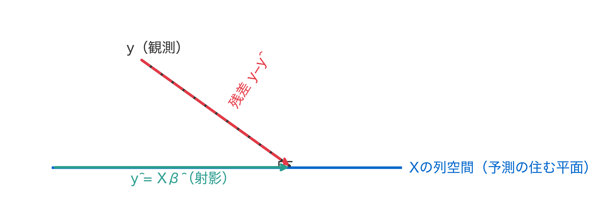
予測 \hat{\mathbf{y}} は \mathbf{y} を平面に真下に落とした影。だから残差が最小になる。
アルゴリズム：計算手順
最小二乗解を求める標準的な流れ：
- 計画行列 \mathbf{X}（切片列の1を追加）と \mathbf{y} を用意
- 正規方程式 (\mathbf{X}^\top\mathbf{X})\boldsymbol{\beta}=\mathbf{X}^\top\mathbf{y} を解く
- 実装上は逆行列を直接作らずQR分解や特異値分解で安定に解く
- 得た \hat{\boldsymbol{\beta}} で予測 \hat{\mathbf{y}}=\mathbf{X}\hat{\boldsymbol{\beta}} を計算
デモ①：線形回帰を当てはめる
切片 β0 = -36.942
R² = 0.606 （価格の変動の 60.6% を説明）8変数すべてを使うと R^2 \approx 0.6。単回帰の最良 0.47 より明確に向上した。
デモ②：係数を棒グラフで読む
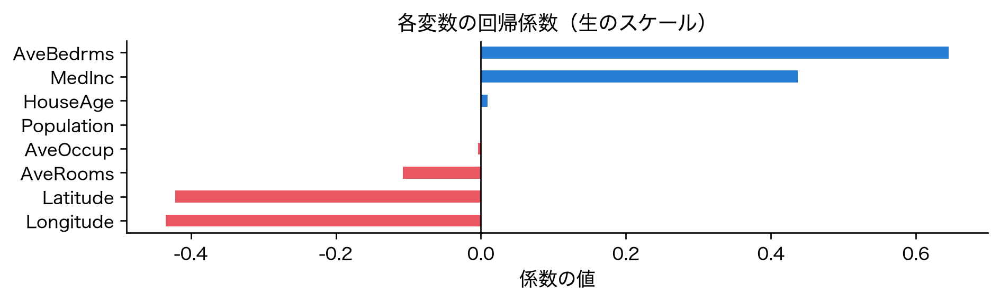
青は価格を上げる効果、赤は下げる効果。だが変数ごとに単位が違うので大小はまだ比べられない。
デモ③：予測 vs 実測

赤線に近いほど良い。上限5で頭打ちになり、高価格帯を低く見積もる癖が見える。
デモ④：標準化して寄与を比べる
標準化すると係数を同じ土俵で比べられる。
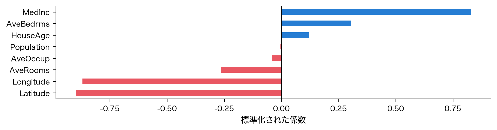
立地と収入が大きく効いている。
結果の解釈①：R² の意味
R^2 = 1 - \frac{\sum_i (y_i-\hat{y}_i)^2}{\sum_i (y_i-\bar{y})^2}
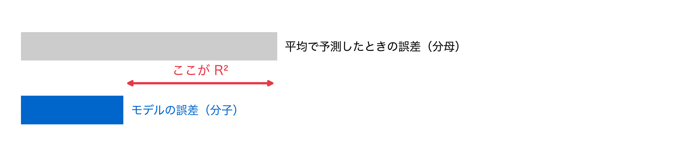
1に近いほど良い。ただし訓練データでは楽観的になる。
結果の解釈②：係数バーの読み方
- 棒の長さ＝寄与の大きさ、色（符号）＝効果の向き
- 標準化後の係数で初めて変数間の大小が比較できる
- 「収入が効く」は妥当。だが緯度・経度に大きな係数が付くのは要注意
- 立地は本来もっと複雑（非線形）なのに、直線で無理に説明している可能性
図は「答え」ではなく「次の問いの出発点」。
解釈③：予測 vs 実測図の読み方
- 点が赤い対角線に密に乗るほど良いモデル
- 系統的なズレ（特定領域で上 or 下に偏る）はモデルの欠陥のサイン
- ランダムに散らばるだけならノイズ、偏るなら改善の余地あり
残差の「形」を見るのが、線形回帰を使いこなす第一歩。
落とし穴①：相関≠因果
- 収入と価格に強い相関 → 「収入が高いと価格が上がる」と言いたくなる
- だが第三の要因（例：都市の発展度）が両方を押し上げているだけかもしれない
- 回帰係数は関連の強さを測るが、因果の証明ではない
- 「この変数をいじれば結果が変わる」と短絡しない
落とし穴②：外挿の危険
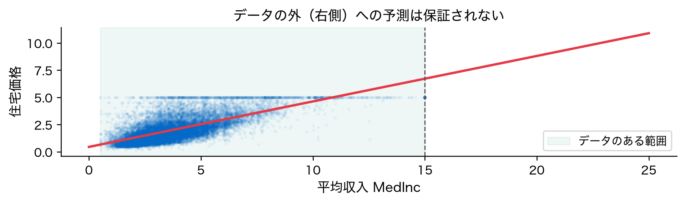
学習した範囲の外（外挿）では直線が現実から外れやすい。訓練データの範囲を意識する。
落とし穴③：係数の符号解釈の罠
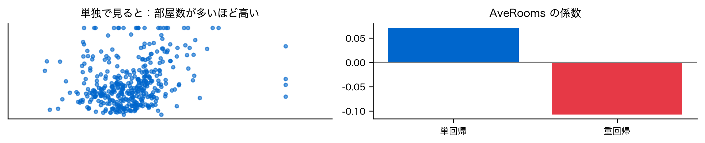
- 多変数だと係数が直感と逆符号になることがある
- 実際
AveRoomsの係数は単回帰で +0.071（正）、重回帰で −0.107（負）
符号だけで因果や重要度を断定しない（第5回）。
発展①：直線では足りないとき
- 線形回帰は「重み付き和」しか表せない → 曲がった関係は苦手
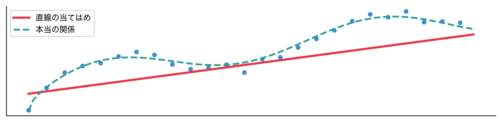
直線で足りないと感じたら、次の手法へ進む合図。
発展②：分類・次元縮小への布石
- 目的変数がカテゴリ（買う/買わない）なら分類（第7〜8回）
- 変数が多すぎて見通しが悪いなら次元縮小（PCA、第10〜11回）
- 正解ラベルがなくグループを探すならクラスタリング（第12〜13回）
回帰を入り口に、地図の他のエリアへ広げていく。
まとめ
- 多変量解析は「複数の変数を同時に扱う」統計解析の総称
- 線形回帰は重み付き和＋最小二乗——正規方程式で係数が一意に決まる
- 数字（R²・係数）は意味を理解して読む——相関≠因果、外挿に注意
今日の住宅価格予測は、この講義全体の軸となる最も基本的な例。
次回予告
作った線形回帰モデル、R^2=0.6 という数字。
- でもこれは訓練データへの当てはまりにすぎない
- 新しいデータでも同じ精度が出るのか？
- 「本当に使えるモデル」かをどう測るのか
第2回：データ分割と汎化性能——モデルの真の実力を測る方法へ。